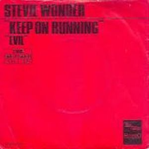
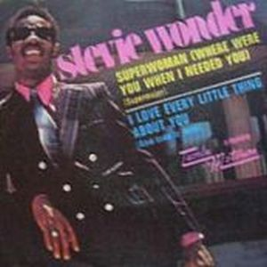

Stevie Wonder, with a new recording contract with Motown, which gets full freedom creative and artistic, beginning a period of disks called to revolutionize the concept of music, with a current structure of LP. The album, Music Of My Mind, have a sound more sophisticated, using sounds produced by synthesizers mixed with expertise, fully harmonious melodies and beautiful songs, where his musical ambitions are growing that the items are longer and more varied gender. There is also the beginning of a partnership that will last over time with TONTO's Expanding Head Band (Robert Margouleff and Malcolm Cecil), pioneers in the use of electronic instruments (synthesizers).
 